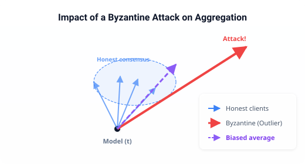

Byzantine resilience in distributed learning¶
In a standard machine-learning pipeline, one machine trains one model on one dataset. Distributed learning breaks this assumption: many machines — called workers — train the same model collaboratively. Each worker holds a local copy of the model, runs a few training steps on its own data, and sends its gradients to a central server that aggregates them and broadcasts the updated model back.
This setup is powerful. It scales to datasets that do not fit on a single node, and it preserves privacy because raw data never leaves the worker. But it also introduces a new vulnerability: what if some workers lie?
The Byzantine generals problem¶
The name comes from a classic distributed-systems thought experiment. Imagine several generals surrounding a city. They must agree on a common plan of action — attack or retreat — by exchanging messages. Some generals may be traitors who send conflicting or misleading information. The loyal generals need a protocol that lets them reach agreement despite the traitors.
In distributed learning, the generals are the workers, the messages are gradients, and the “plan” is the updated model. A Byzantine worker deliberately sends a malicious gradient. Its goal is to corrupt the global model so that the final classifier is useless, biased, or leaks information.
Note
Byzantine failures are strictly more severe than simple crashes. A crashed worker stops responding; a Byzantine worker actively participates and sends carefully crafted bad data.
Why simple averaging fails¶
The most natural aggregation rule is to average all received gradients. It is fast, memory-efficient, and optimal when every worker is honest.
But averaging gives every worker equal weight. If even a single Byzantine worker sends a huge gradient in the wrong direction, the average is pulled arbitrarily far from the honest consensus. In practice, a few malicious workers can reduce test accuracy from 90 % to random-guess levels in a handful of steps.

A single large outlier gradient (red arrow) distorts the average away from the honest cluster (blue arrows).¶
Robust aggregation: the high-level idea¶
A robust aggregation rule (or gradient aggregation rule, GAR) replaces the simple average with a statistic that is insensitive to a minority of outliers. The rule receives \(n\) gradients, knows that at most \(f\) of them may be Byzantine, and must produce a single trustworthy update.
Different rules make different trade-offs:
Robustness — how many Byzantine workers can the rule tolerate?
Complexity — how long does aggregation take as \(n\) or the model dimension \(d\) grows?
Bias — does the rule systematically shrink or distort honest gradients?
Rule |
Core idea |
Robustness |
Cost |
|---|---|---|---|
Median |
Coordinate-wise median |
1 malicious worker |
\(\mathcal{O}(n d)\) |
Krum |
Select the gradient closest to its \(n-f-2\) nearest neighbours |
\(f < \frac{n-2}{2}\) |
\(\mathcal{O}(n^2 d)\) |
Bulyan |
Krum pre-selection + coordinate-wise median |
Stronger than Krum alone |
\(\mathcal{O}(n^2 d)\) |
Brute |
Search every subset of \(n-f\) gradients for the best average |
Optimal (up to \(f\)) |
Exponential in \(n\) |
None of these rules is universally best. The right choice depends on the expected threat model, the budget for computation, and whether a small bias is acceptable.
Attacks and threat models¶
A Byzantine attack is a strategy for crafting malicious gradients. Attacks vary in how much information the adversary needs:
Omniscient — the attacker sees all honest gradients before crafting its own. This is the strongest model and yields the most damaging attacks.
Partial knowledge — the attacker only sees a subset or a noisy estimate of the honest gradients.
Blind — the attacker knows nothing about the honest gradients and uses a fixed strategy (e.g., sending constant vectors or
NaNvalues).
Even a blind attack can break simple averaging. More sophisticated attacks aim to fool robust rules by making malicious gradients look honest — for example, by staying close to the honest cluster while pushing the aggregate in a harmful direction.
Where Krum fits in¶
Krum is a research framework, not a production system. Its goal is to let you compare robust aggregation rules and attack strategies under controlled conditions, so you can decide which combination works best for your setting.
Rather than hiding the complexity behind a high-level API, Krum exposes every step of the pipeline: model construction, gradient computation, attack injection, aggregation, and measurement. This transparency is essential for research, because it lets you modify any layer without fighting the framework.
If you are new to the field, the Getting started tutorial walks you through a concrete experiment where a Byzantine attack crashes a baseline aggregator while a robust rule keeps accuracy stable.